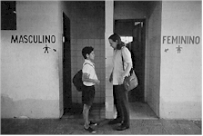
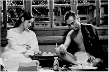

48th Berlin International
Film Festival (1998)
feature by Eddie
Cockrell
Courage Rewarded
Awards and Notes from the 1998 Berlin
International Film Festival
Perhaps taking inspiration from the title of this
year's Children's Film Festival – "Courage to Act" – the International
Jury of the flagship Competition section of the 48th Berlin International Film Festival
seemed to directly refute claims that the whole thing's gone irreparably mainstream and
commercial by awarding the event's top prize, the Golden Berlin Bear, to the
warmly-received but decidedly more artistically adventurous Brazilian-French entry Central
do Brasil (Central Station) – which, fittingly, features a captivating
performance by an 11-year-old newcomer who won the part over a reported 1,500 other
aspirants.
The emotional if somewhat aloof saga of a young street urchin (Vinicius de
Oliveira) saved from a grubby fate at the eponymous railway terminus by a grouchy old
woman (leading Brazilian actress Fernanda Montenegro), this new film from
documentarian-turned-storyteller Walter Salles had just won the Sundance Festival's
"Cinema 100" prize for it's script before being unveiled to European journalists
and the public on Valentine's Day (Sony Pictures Classics will distribute in the USA later
this year).
The prizes, announced on the closing day (22 February) of the Berlinale, cap what at
least one seasoned trade journalist described as the best competition lineup in recent
memory. Elsewhere in the six additional major sections, attendance seemed spotty but
reviews were generally good. While schemes such as the festival's announcement that public
tickets were to be made available to unemployed Berliners (about 20 per cent of the
population at the moment) at half price, cynical observers wondered whether that wasn't
just a ploy to fill cinemas. At any rate, by Friday (20 February) 500 people had taken
them up on their offer.
 In
other awards news, the runner-up Silver Bear Special Jury Prize went to Barry Levinson's Wag the Dog, which provided a thinly-veiled opportunity for
Robert De Niro (repped also in competition with Great
Expectations and Jackie Brown – a trio
that represent his most recent face hair movies) to appear at a rare press conference to
give his side of that recent dust-up with French police. And while it was great to see
snippets of a festival press conference running on American news programs, it's a shame it
had to be oriented towards the tabloid aspect of the story and not the film's terrific
reception in Europe.
In
other awards news, the runner-up Silver Bear Special Jury Prize went to Barry Levinson's Wag the Dog, which provided a thinly-veiled opportunity for
Robert De Niro (repped also in competition with Great
Expectations and Jackie Brown – a trio
that represent his most recent face hair movies) to appear at a rare press conference to
give his side of that recent dust-up with French police. And while it was great to see
snippets of a festival press conference running on American news programs, it's a shame it
had to be oriented towards the tabloid aspect of the story and not the film's terrific
reception in Europe.
Neil Jordan picked up the Silver Bear for Best Director on the strength of The
Butcher Boy (USA-Ireland), the harrowing but often comical story of an increasingly
nasty young boy in 1960s Ireland based on the popular 1992 novel. It is slated to open
stateside 3 April.
Finding a vindication of sorts for the shocking snub of this year's Oscar nominations,
Samuel L. Jackson won the Silver Berlin Bear for Best Actor for Jackie Brown, while
Fernanda Montenegro's performance as the bitter Dora in Central Station garnered
her the Best Actress Bear (making it the only film to win two prominent awards).
 Citing his "lifetime contribution to the art of
cinema" – an unassailable fact – the jury awarded a discretionary Silver
Berlin Bear to Alain Resnais for the French production On connait la chanson (Same Old Song). Honoring a rather less seasoned
industry presence, Matt Damon received a Silver Berlin Bear for Outstanding Single
Achievement as co-scriptwriter and lead actor for Good Will Hunting (USA).
Citing his "lifetime contribution to the art of
cinema" – an unassailable fact – the jury awarded a discretionary Silver
Berlin Bear to Alain Resnais for the French production On connait la chanson (Same Old Song). Honoring a rather less seasoned
industry presence, Matt Damon received a Silver Berlin Bear for Outstanding Single
Achievement as co-scriptwriter and lead actor for Good Will Hunting (USA).
The DM 50,000 (approximately $28,000) European Academy of Film and Television
"Blue Angel" prize was awarded to actor-turned-director Jeroen Krabbe for his
interesting but ultimately unbalanced drama Left
Luggage (The Netherlands-Belgium-United Kingdom). For opening "new horizons
in filmmaking," the Alfred Bauer Prize – named for the festival's founder –
was awarded to Stanley Kwan's gay themed Hong Kong drama Yue Kuai le, yue duo luo (Hold
You Tight).
Three additional Bears – dubbed Special Mentions – were awarded for
individual achievement: Isabella Rossellini for the Hassidic Mrs. Kalman in Left
Luggage (quite a good performance, actually); fifteen-year-old Eammonn Owens as the
troubled young Francie Brady in Neil Jordan's The Butcher Boy ("It's grand fun
makin' a film" he recently told "Entertainment Weekly"); and
cinematographer Slawomir Idsziak for his lensing of Michael Winterbottom's I Want You
(United Kingdom). Short films honored include the Dutch I Move So I Am and
Nicaragua's Cinema Alcazar.
The International Jury wasn't the only body hard at work judging films at the festival,
only the one with the highest profile. Hold You Tight won the Teddy, awarded by a
Berlin-based gay and lesbian alliance (reportedly, they always have the wildest awards
ceremonies), while FIPRESCI, the international critics organization, awarded prizes to the
Japanese competition film Sada, Amos Kollek's surprising crowd-pleaser Sue
in the Panorama, the six-hour Forum epic from Israel entitled Fragments + Jerusalem,
and a special mention to the Russian film In That Land (which also won something
called the Peace Film Prize). And Central Station also won an Ecumenical Jury Prize
(awarded by the international film organizations of the Protestant and Catholic Churches
"to directors who have displayed genuine artistic talent and succeeded in portraying
actions or human experiences that comply with the Gospels or sensitize viewers to
spiritual, human or social values"), along with Sue and a Taiwanese film
called Homesick Eyes.
On the administrative side of festival operations, the various offices that coordinate
accreditation, tickets and amenities do spectacular jobs of taking something that is way
too big to control and giving it order. This year, ticket distribution seemed more
generous, coordination more fluid and front line workers more courteous than ever, a sure
sign that the festival management is tempering a tough financial and logistic situation
with efficiency, grace and understanding.
Fittingly, the actions of the International Jury, coming on the heels of an
uncomplimentary and inaccurate 18 February article in the New York Times accusing the
festival of being "hard up and struggling for money" ("After Cold War,
Berlin Festival Seeks Cold Cash" screamed the headline), send a clear message: Berlin
welcomes and celebrates star-studded studio fare, but will for the most part award based
on merit and not profile. Asked rather bluntly by the festival daily magazine if he
thought about winning an award, Central Station's Salles shot back: "You never
make a film to win prizes; you make a film because you have a story to tell." The new
Berlinale may be populated by more suits than at any time in it's illustrious history, but
the moneymen are matched – and often trumped – by artists from around the world
with good stories to tell. And that's why the Berlin International Film Festival may be
the most important and satisfying film festival on the planet.
The next and final report will feature capsule reviews of films caught on the run and
final thoughts.
The International Jury of the 48th Berlin International Film Festival:
- Ben Kingsley, President (Great Britain)
- Senta Berger (Germany/Austria)
- Leslie Cheung (China/Canada)
- Helmut Dietl (Germany)
- Annette Insdorf (USA)
- Li Cheuk-to (Hong Kong/China)
- Maurizio Nichetti (Italy)
- Hector Olivera (Argentina)
- Brigitte Rouan (France)
- Maja Turovskaja (Russia)
- Michael Williams-Jones (Great Britain)
To read more about the award winners at the Berlinale, visit the official awards site
at: